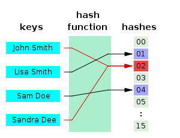
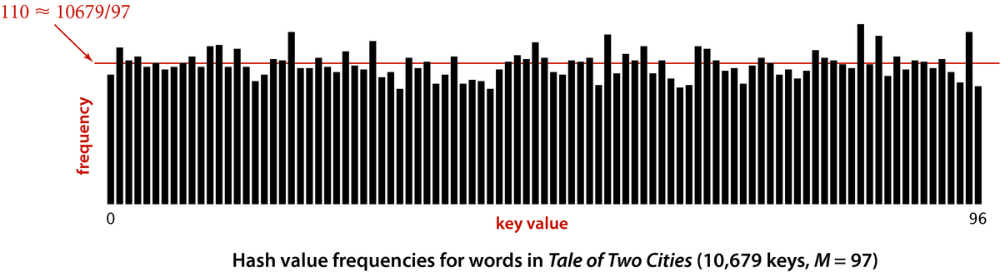
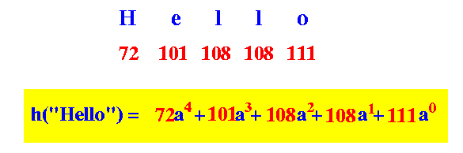
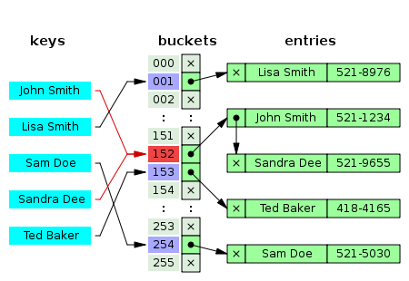
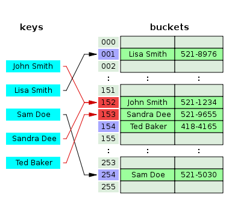
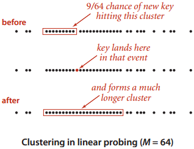

Hash function. Source: wikipedia.org
Hash tables
If the keys of a map are small integers, we can implement the map with an array, where key k is stored at index k. If the keys are large, or not integers, we can use a hash table to efficiently implement the map. A hash table uses a hash function to transform each key into an array index in the range [0, M-1], where M is the array size. The array size may be much smaller than the number of possible keys. When two keys hash to the same array index, it is called a collision. Two common collision resolution methods are separate chaining and open addressing.The basic operations take O(1) time (average-case), but unlike binary search trees, we cannot efficiently iterate through a hash table in order.

Each hash value should be equally likely. Source: Sedgewick p. 463
Hash functions
A hash function must be consistent; equal keys should hash to the same array index. It should uniformly distribute the keys to minimize the number of collisions (in other words, each key is equally likely to hash to each array index). A hash function should be efficient to calculate.Hash functions often consist of two parts:
- Convert the key to an integer hash code (not necessarily within range).
- Map the integer to the range [0, M-1]. This can be done by modding by M.
M is sometimes chosen to be prime to disperse the keys more evenly, in case there are patterns in the input.

Computing the polynomial hash code for "Hello".
Source: mathcs.emory.edu/~cheung
For strings, a common technique is to use a polynomial hash code, where we interpret each character as a digit of a base-a number (Java's String class uses a=31).
Separate chaining

Separate chaining. Source: wikipedia.org
- Searching: First compute the array index, then search the bucket.
- Insertion/updating: Search for the key. If found, update the entry. Otherwise insert the entry.
- Deletion: Search for the key. If found, delete the entry.
If there are M buckets and n keys, the average number of keys per bucket is n/M. This ratio is called the load factor.
In an unsuccessful search, we have to look at every key in a bucket. If we assume that the key is equally likely to hash to each bucket, the expected runtime is O(n/M). If n is O(M), the expected runtime is O(1). When the load factor grows too large, we can increase the array size and reinsert all of the keys to keep the load factor small (HashMap uses a threshold of 0.75 by default). Reinserting takes amortized constant time because we increase the array size by a constant factor.
If the buckets are linked lists, the worst-case runtime is O(n) (when every key hashes to the same bucket). Since Java 8, HashMap avoids O(n) worst-case by converting buckets to self-balancing trees when they grow too large. With a good hash function, it's very unlikely for a bucket to contain a large number of elements.
Separate chaining implementation
Sample codeClasses: HashSet / HashMap
Interfaces: Set / Map
These are simplified implementations of HashSet and HashMap from the JCF. Resizing is not implemented.
Open addressing

Linear probing. Source: wikipedia.org

Source: Sedgewick p. 472
Linear probing
Insertion: Starting at the computed hash, if the slot is already occupied, try each successive slot one at a time until we find either the key or an empty slot, wrapping around the end of the table if necessary.Searching: Starting at the computed hash, check each slot until we either find either the key an empty slot.
Deletion: Search for the entry, then delete it. The entry may be in the middle of a cluster. We cannot mark it as empty, because then we may be unable to find entries in the right portion of the cluster. Instead, we can mark it with a special "deleted" value. We can pass over this slot when searching, but it is still a valid slot for insertion. If we want to avoid wasting space, another option is to reinsert all keys in the cluster to the right of the deleted key.
A problem with linear probing is that entries tend to cluster into contiguous groups, because if there is a cluster of i entries, the spot after the cluster will be filled next with probability (i+1)/M.
Linear probing implementation
Sample codeClasses: HashSetLinearProbing
Interfaces: Set
Resizing is not implemented.